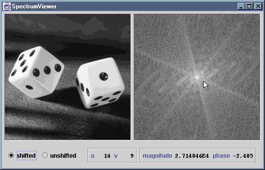

The SpectrumViewer application displays an input image and
the logarithmically-scaled spectrum of that image. Radiobuttons are
provided to allow the view to be toggled between a shifted and unshifted
spectrum. An information panel displays horizontal and vertical spatial
frequency, magnitude and phase for the point under the cursor, when the
cursor is positioned over the spectrum.
The file SpectrumViewer.java compiles to produce
SpectrumViewer.class SpectrumViewer$1.class SpectrumViewer$Buttons.class SpectrumViewer$Info.class SpectrumViewer$Scroller.class
These .class files have been packaged as a single JAR file,
SpectrumViewer.jar. You can install the application by copying
this JAR file, along with either the MS-DOS batch file
SpectrumViewer.bat or the bash shell script
SpectrumViewer.sh, as appropriate. The batch file or script
should be edited to reflect the new location of the JAR file.